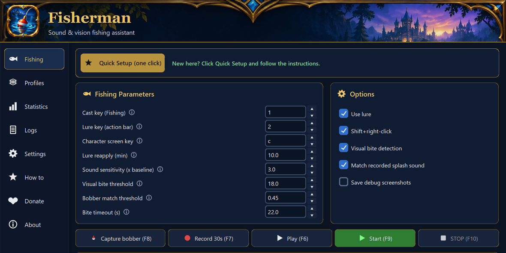
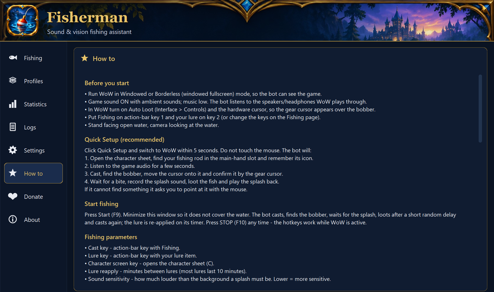

Before you install
Automating gameplay is against the World of Warcraft Terms of Use, and Blizzard can suspend accounts that use it. Fisherman is an independent tool, not made or endorsed by Blizzard Entertainment. Use it at your own risk.
What it does
One-click Quick Setup
Opens your character sheet, finds your fishing rod, captures the bobber and records the splash sound. Then you press Start.
Hears the splash
Matches the sound of your own recorded splash and ignores clicks and ambience, so it does not bite on noise.
Sees the bobber
Finds the bobber by image matching and checks the cursor has turned into the gear before it clicks.
Auto-lure
Re-applies your lure on a timer: lure key, character sheet, cursor to the rod, click, close.
Human-like timing
Curved cursor paths with jitter, and random loot and recast delays you can tune.
16 languages
English, Russian, German, French, Spanish, Italian, Portuguese, Korean, Chinese (simplified and traditional), Japanese, Polish, Ukrainian, Belarusian, Turkish and Dutch.
See it


Get started
- Download and run the installer. Windows may warn about an unknown publisher: see the first question below.
- In WoW: Windowed (Fullscreen), sound on, Interface > Controls > Auto Loot on. Put Fishing on key 1 and your lure on 2.
- Open Fisherman, click Quick Setup and switch to WoW within 5 seconds. Follow the log.
- Press F9 to start. Press Space at any time to stop everything.
Questions
Windows says "Windows protected your PC". Is that safe?
The installer is not code-signed yet, so SmartScreen warns about any new unsigned program. Click More info, then Run anyway. Fisherman needs administrator rights to send input to WoW, and it captures the screen and audio locally and never uploads them. Compare the file's SHA-256 with the one in the release notes if you want to be sure you have the genuine file.
Can I get banned?
Yes, it is possible. Botting breaks Blizzard's rules, and the risk is yours. Fisherman reads pixels and audio and sends ordinary keyboard and mouse input, but that does not make it safe from detection.
Where are my settings stored? How do I uninstall?
Settings, captures and profiles live in %APPDATA%\Fisherman. Remove Fisherman under Windows Settings > Apps. The uninstaller asks whether to delete your settings too.
It misses the bobber or bites too early. What should I try?
Run Quick Setup again, with WoW's sound on and Master volume around 50%. The in-app How to page has a troubleshooting section for sound sensitivity, bobber match threshold and calibration.
Is it free?
Fisherman is free to try. Quick Setup, the tests and fishing all work, but each fishing run stops after 30 minutes (start a new run any time). A lifetime licence for one PC removes the limit. It is bought once with Telegram Stars in our bot (150 Stars, about $2-3 depending on how you buy Stars) and you get your key right away. The Licence page in the app has the Buy button.
How do I buy, refund or move my licence?
Buy: open the Licence page in the app, click Buy and pay in Telegram. Paste the key the bot sends you into the app and click Activate. Refund: send /refund to the bot within 7 days and the Stars come back (one refund per Telegram account; the key stops working). New PC or reinstalled Windows: a reinstall on the same PC usually keeps working. For a new PC send /reset to the bot (once every 30 days) and enter the key on the new PC. Activation needs an internet connection, which WoW needs anyway.
What does the app send over the network?
Only if you activate a licence: your key, an anonymous hash of your PC's IDs and the app version, at activation and in regular checks. Your screen and audio never leave your PC.